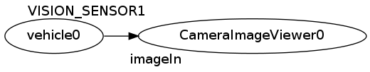
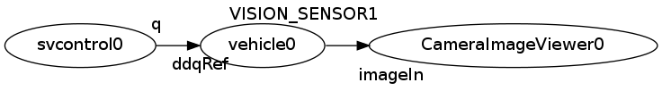

接続による拡張¶
このチュートリアルでは、シミュレータを自作のコントローラに接続する方法を学習します。
注釈
オリジナルのプロジェクトの作成 チュートリアルを済ませていない人は先に学習してください。
設定¶
この先に進む前に、以下の内容の “rtc.conf” ファイルをカレントフォルダに作成してください（/etc/rtc.confに作成することで同じ設定をコンピュータ全体に適用することもできます）。
1 2 3 4 5 6 7 8 | corba.nameservers: 127.0.0.1
naming.formats: %n.rtc
logger.enable: YES
logger.log_level: NORMAL
logger.file_name: stdout
manager.shutdown_onrtcs: NO
manager.is_master: YES
manager.modules.load_path: ., /usr/lib, /usr/local/lib
|
プロジェクトファイルの基本構成¶
前のチュートリアルで学習したようにhrpsys-gazebo-simulatorのプロジェクトファイルはXML形式のファイルです。プロジェクトファイルの編集には好きなテキストエディタを使うことができます。
テキストファイルでプロジェクトファイルを開きます:
$ emacs mysimulation.xml
テキストエディタでプロジェクトファイルを開くと以下の内容になっているはずです。
1 2 3 4 5 6 7 8 9 10 11 12 13 14 15 16 17 18 19 20 21 22 23 | <?xml version="1.0" encoding="UTF-8" standalone="no"?>
<grxui>
<mode name="Simulation">
<item class="com.generalrobotix.ui.item.GrxRTSItem" name="untitled" select="true">
<property name="PA10Controller(Robot)0.period" value="0.005"/>
<property name="HGcontroller0.period" value="0.005"/>
<property name="HGcontroller0.factory" value="HGcontroller"/>
<property name="connection" value="HGcontroller0.qOut:PA10Controller(Robot)0.qRef"/>
<property name="connection" value="HGcontroller0.dqOut:PA10Controller(Robot)0.dqRef"/>
<property name="connection" value="HGcontroller0.ddqOut:PA10Controller(Robot)0.ddqRef"/>
</item>
<item class="com.generalrobotix.ui.item.GrxModelItem" name="simple_vehicle_with_camera" select="true" url="model://simple_vehicle_with_camera">
<property name="isRobot" value="true"/>
<property name="rtcName" value="vehicle0"/>
<property name="inport" value="qRef:JOINT_VALUE"/>
<property name="inport" value="dqRef:JOINT_VELOCITY"/>
<property name="inport" value="ddqRef:JOINT_ACCELERATION"/>
<property name="outport" value="q:JOINT_VALUE"/>
<property name="outport" value="VISION_SENSOR1:/simple_vehicle_with_camera/VISION_SENSOR1/image_raw:VISION_SENSOR"/>
</item>
..snip..
</mode>
</grxui>
|
シミュレータを外部の制御プロセスに接続するために com.generalrobotix.ui.item.GrxRTSItem を編集します。
com.generalrobotix.ui.item.GrxRTSItem 設定項目では、”.period”が各RTコンポーネントの実行周期を設定します。”.factory”はコンポーネントのインスタンスを作成するのに用いられる共有ライブラリを設定します（詳細はあとで説明します）。”connection”はコンポーネント間の接続を設定します。
RTコンポーネントのインスタンスを作成する¶
hrpsys-baseはシミュレーション環境を提供するだけでなく、システム構築に利用することができる様々なコンポーネントも提供します。
すべてのコンポーネントのリストを以下のページから一覧できます:
http://fkanehiro.github.io/hrpsys-base/
前のチュートリアルでは仮想カメラを持った”simple_vehicle_with_camera”ロボットモデルを使うようにプロジェクトを設定しました。今回のチュートリアルでは、 CameraImageViewer コンポーネントを使ってカメラからの入力を表示してみましょう。
RTコンポーネントを使うためには、まず factory プロパティを設定してコンポーネントのインスタンスを作成します。以下の例では”CameraImageViewer0”がインスタンスの名前です。”CameraImageViewer”はコンポーネントの名前です。コンポーネントの実行周期を設定するために period プロパティも定義します。
そして、”vehicle0”コンポーネントの”VISION_SENSOR1”ポートと”CameraImageViewer0”コンポーネントの “imageIn”ポートを接続します。
1 2 3 4 5 6 | <item class="com.generalrobotix.ui.item.GrxRTSItem" name="untitled" select="true">
<property name="vehicle0.period" value="0.005"/>
<property name="CameraImageViewer0.factory" value="CameraImageViewer"/>
<property name="CameraImageViewer0.period" value="0.5"/>
<property name="connection" value="vehicle0.VISION_SENSOR1:CameraImageViewer0.imageIn"/>
</item>
|
結果として、この設定から以下のようなシステムが生成されます:

システムの設定はこれで終了です。hrpsys-gazebo-simulatorを使ってプロジェクトを開いてみましょう:
$ hrpsys-gazebo-simulator myproject.xml $HOME/.gazebo/models/simple_vehicle_with_camera.world -endless
オリジナルのRTコンポーネントとの接続¶
ここでは”svcontrol”という名前のオリジナルのコンポーネントを作成します。まずはスケルトンコードを生成するために以下のコマンドを実行してください:
$ rtc-template -bcxx --module-name=svcontrol --outport=q:TimedDoubleSeq
生成されたファイルsvcontrol.hの以下の部分をアンコメントします:
virtual RTC::ReturnCode_t onExecute(RTC::UniqueId ec_id);
ファイルsvcontrol.cppの以下の部分をアンコメントし追記します:
RTC::ReturnCode_t svcontrol::onExecute(RTC::UniqueId ec_id)
{
m_q.data.length(4);
m_q.data[0] = 10.0;
m_q.data[1] = 10.0;
m_q.data[2] = 10.0;
m_q.data[3] = 10.0;
m_qOut.write();
return RTC::RTC_OK;
}
コンポーネントをコンパイルします:
$ make -f Makefile.svcontrol
このコンポーネントはロボットモデルのすべての関節に一定の力を加える制御をします。
svcontrol コンポーネントをインスタンス化し、シミュレータに接続するために、myproject.xmlに以下の設定を追加してください。
1 2 3 4 5 6 7 8 9 | <item class="com.generalrobotix.ui.item.GrxRTSItem" name="untitled" select="true">
<property name="vehicle0.period" value="0.005"/>
<property name="CameraImageViewer0.factory" value="CameraImageViewer"/>
<property name="CameraImageViewer0.period" value="0.5"/>
<property name="svcontrol0.factory" value="svcontrol"/>
<property name="svcontrol0.period" value="0.05"/>
<property name="connection" value="vehicle0.VISION_SENSOR1:CameraImageViewer0.imageIn"/>
<property name="connection" value="svcontrol0.q:vehicle0.dqRef"/>
</item>
|
結果として、この設定から以下のようなシステムが生成されます:

システムの設定はこれで終了です。hrpsys-gazebo-simulatorでプロジェクトを開いて結果を確認してみましょう:
$ hrpsys-gazebo-simulator myproject.xml $HOME/.gazebo/models/simple_vehicle_with_camera.world -endless